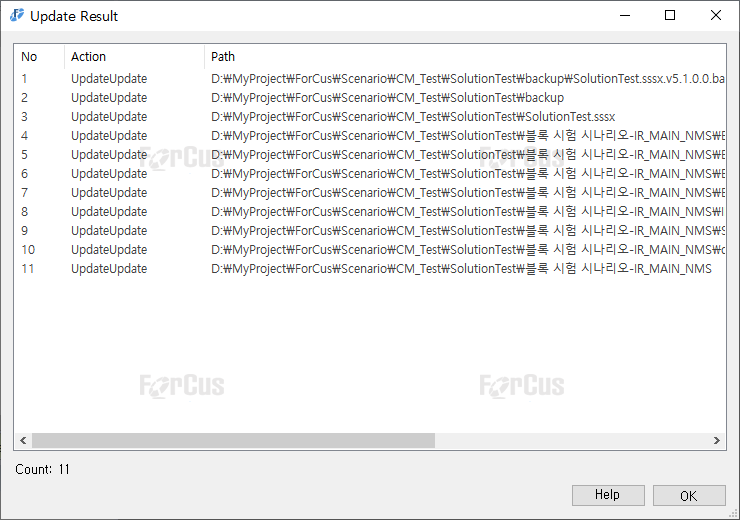

| 시나리오 형상관리 - Update | 시작 다음 이전 |
- 시나리오 편집 전에 가장 먼저 해야 하는 명령으로 원격 저장소에 있는 가장 최신 Revision 항목 중에 변경된 내용을 로컬로 다운로드 및 갱신 합니다. 이 명령을 하지 않고 편집 후 커밋 하는 경우 충돌(Conflict)이 발생 할 수 있습니다.

Repository 에 수정, 추가, 이름 변경된 최신 Commit된 Revision 파일로 Working copy 디렉토리의 파일을 갱신 합니다.
* 갱신된 내용이 없는 경우 Update 창은 자동 종료 됩니다.
|
| Copyrights(C) Bridgetec.co.kr. All Rights Reserved | 시작 다음 이전 |